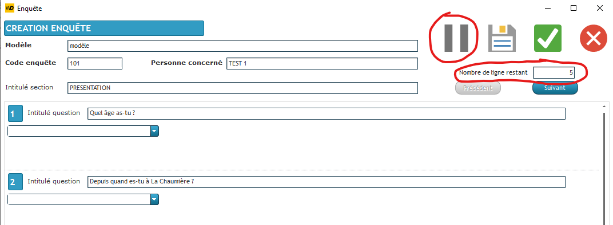

La Chaumière
Présentation de l'association
Il s'agit d'un Centre d'Hébergement et de Réinsertion Sociale (CHRS) ayant pour mission d'assurer l'accueil, le logement, l'accompagnement et l'insertion sociale des personnes ou familles connaissant de graves difficultés, en vue de les aider à accéder ou à recouvrer leur autonomie personnelle et sociale. Cela concerne notamment les victimes de violence, les personnes confrontées à l'alcoolisme et aux toxicomanies, ainsi que les personnes sortant de prison.
Objectif
L'objectif est de reprendre un projet commencé en 2022 et d'y apporter des améliorations. Le projet vise à améliorer les enquêtes menées par les conseillères auprès des nouvelles familles arrivant au sein de l'association. Il consiste à créer un modèle de plusieurs questions pouvant être réutilisé ultérieurement pour interroger les personnes. Ensuite, il s'agira de pouvoir créer des enquêtes dans leur base de données et de réaliser des statistiques avec les données recueillies.
- Faire un modèle d'enquête (pour le questionnaire)
- Utiliser le modèle d'enquête au pret des nouveaux arrivais
- Afficher des statistiques en fonction des questions
Modèle d'enquête
Initialement, le modèle d'enquêtes était complété, cependant, la cliente faisait face à plusieurs problèmes techniques et éprouvait des difficultés à s'orienter au sein du modèle. Pour remédier à cela, j'ai développé un explorateur pour l'aider à se repérer.
Avant modification :
Après modification :

Dans la dernière mise à jour, j'ai permis à la cliente de naviguer facilement entre les différentes sections, de numéroter les questions, et d'identifier les dépendances dans l'explorateur grâce à une icône rouge. De plus, j'ai ajouté un bouton "play" en haut à droite de la fenêtre, permettant de tester le modèle de questionnaire. Ces modifications visent à faciliter la navigation, notamment dans des modèles comportant un grand nombre de questions.
Questionnaire
J'ai également effectué des modifications lors des enquêtes. La cliente avait exprimé sa préoccupation concernant l'absence de contrôle lorsqu'elle passait d'une section à une autre, afin de vérifier qu'elle n'avait pas oublié de question. La seconde modification vise à permettre la mise en pause de l'enquête, offrant ainsi la possibilité de la reprendre ultérieurement.

Liste des enquêtes
Cette nouvelle fenêtre offre la possibilité de visualiser les enquêtes déjà réalisées. Elle permet également de les modifier, de les reprendre seul ou à plusieurs, et de créer de nouvelles enquêtes. De plus, elle offre la fonctionnalité d'affichage avec divers paramètres tels que la date, le modèle, et le statut (terminé, en cours, ou sur pause).